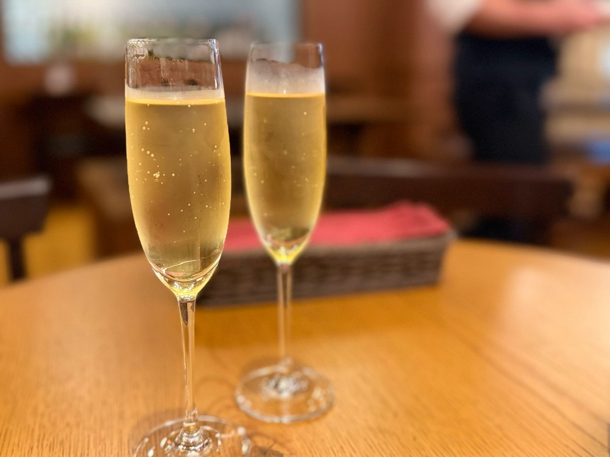

01 CASE 01｜ヨーロピアンダイニング
予約獲得・集客改善開業から数ヶ月。伸び悩んでいた予約状況が、PRをきっかけに大きく変化。
RESULT
- PRをきっかけに予約が大幅に増加
課題
新規開業から数ヶ月が経過したヨーロピアンダイニング。こだわりの料理や空間を提供していたものの、当初は認知が十分に広がらず、予約がほとんど入らない状況でした。
施策
そこで、大田区サンポットでお店の魅力を取り上げ、料理や店内の雰囲気、こだわりをInstagramで発信。
変化
その結果、投稿をきっかけに大きな反響が生まれ、予約が一気に増加。予約で埋まるほどの成果につながりました。